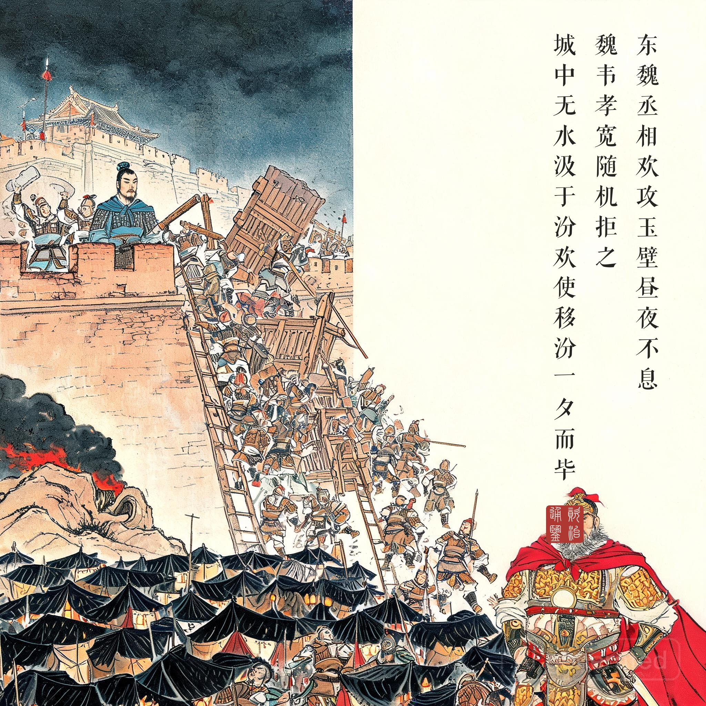
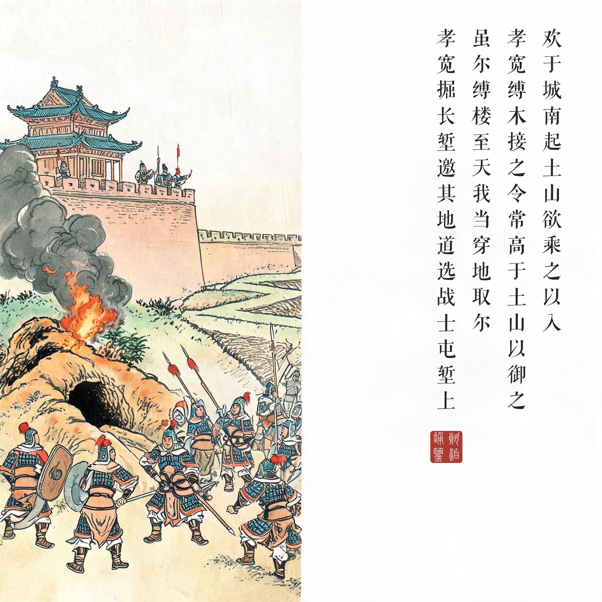
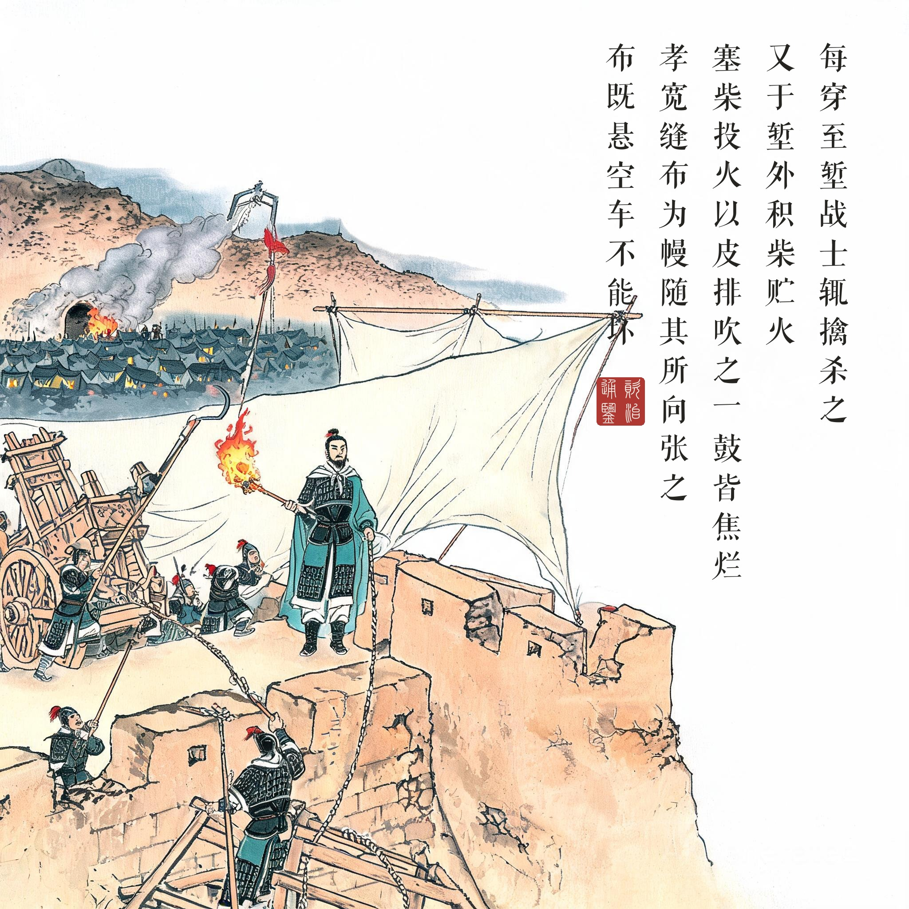
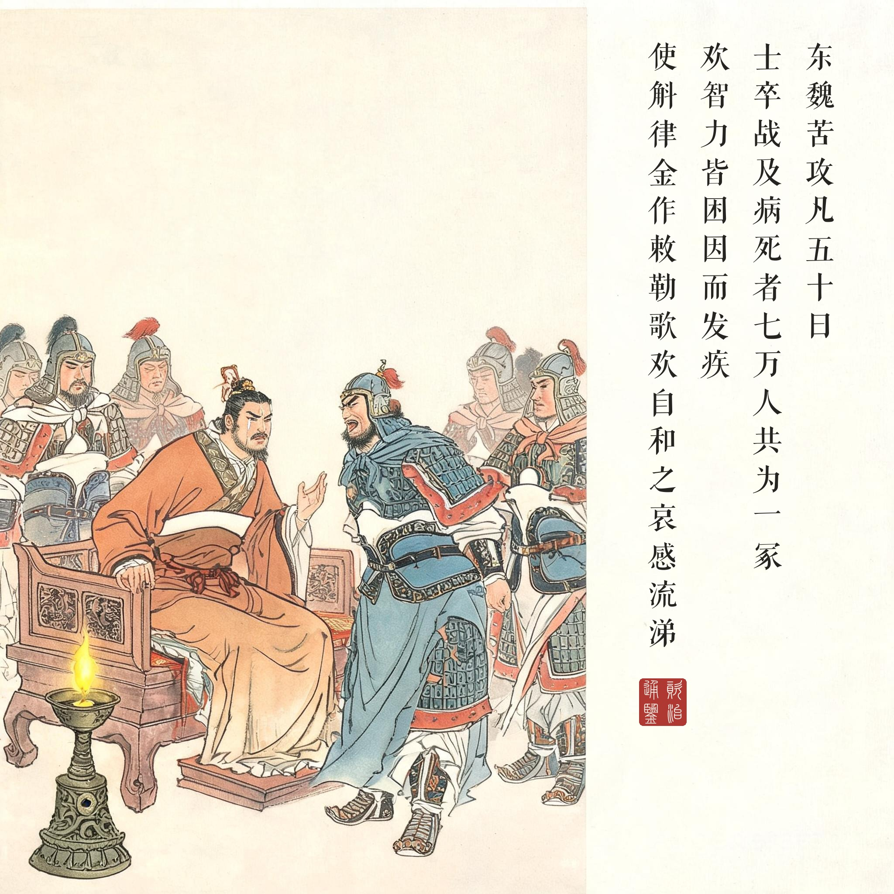

《资治通鉴 · 卷第一百五十九 · 梁纪十五》高祖武皇帝十五大同十一年（公元 546 年）
（据 daizhigev20《资治通鉴》底本节录）
东魏丞相欢攻玉壁，昼夜不息，魏韦孝宽随机拒之。城中无水，汲于汾，欢使移汾，一夕而毕。欢于城南起土山，欲乘之以入。城上先有二楼，孝宽缚木接之，令常高于土山以御之。欢使告之曰：“虽尔缚楼至天，我当穿地取尔。”乃凿地为十道……孝宽掘长堑，邀其地道，选战士屯堑上。每穿至堑，战士辄擒杀之。又于堑外积柴贮火，敌有在地道内者，塞柴投火，以皮排吹之，一鼓皆焦烂。敌以攻车撞城，车之所及，莫不摧毁，无能御者。孝宽缝布为幔，随其所向张之，布既悬空，车不能坏。敌又缚松、麻于竿，灌油加火以烧布，并欲焚楼。孝宽作长钩，利其刃，火竿将至，以钩遥割之，松、麻俱落。敌又于城四面穿地为二十道，其中施梁柱，纵火烧之。柱折，城崩。孝宽随崩处竖木栅以扞之，敌不得入。……东魏苦攻凡五十日，士卒战及病死者七万人，共为一冢。欢智力皆困，因而发疾。有星坠欢营中，士卒惊惧。十一月，庚子，解围去。……欢之自玉壁归也，军中讹言韦孝宽以定功弩射杀丞相；魏人闻之，因下令曰：“劲弩一发，凶身自陨。”欢闻之，勉坐见诸贵，使斛律金作《敕勒歌》，欢自和之，哀感流涕。
东魏丞相高欢进攻玉壁，昼夜不停，西魏韦孝宽随机抵御。城中无水井，从汾河汲水，高欢派人改道汾河，一夜完工。高欢在城南堆起土山，想乘山入城。城上原有两座高楼，孝宽绑木接高，让它始终高于土山来抵御。高欢派人喊话说：“就算你把楼绑到天上，我也会挖地道取你。”于是挖地道十条……孝宽掘出长堑，截住地道，选战士守在堑上。魏军每次挖到堑边，战士就把他们擒杀。又在堑外堆积柴草贮备火种，敌人有在地道里的，塞柴投火，用皮风箱吹火，一个鼓吹之间全被烧焦。敌人用攻车撞城，车所撞之处，无不摧毁，无人能挡。孝宽缝布做成大幔，随着攻车所向张开，布悬在空中，攻车无法破坏。敌人又在竿上绑松枝麻絮，浇油点火烧布幔，想连楼一起烧掉。孝宽制作长钩，磨利钩刃，火竿刚到，用长钩远远割断，松麻纷纷落地。敌人又在城四面挖地道二十条，里面架上梁柱，纵火烧之。柱子烧断，城墙崩塌。孝宽随崩塌处竖立木栅防守，敌人进不来。……东魏苦攻共五十天，士卒战死病死七万人，合葬为一座大坟。高欢智穷力竭，因此发病。有星坠入高欢营中，士卒惊惧。十一月庚子，解围撤走。……高欢从玉壁回师，军中谣传韦孝宽用定功弩射杀了丞相；西魏人听说后，趁机下令说：“劲弩一发，凶身自陨。”高欢听到后，勉强坐着接见诸权贵，让斛律金唱《敕勒歌》，自己跟着唱和，哀伤流泪。
攻城博物馆。玉壁五十天是一部中古攻城战术的百科全书：断水源（移汾）、堆土山、挖地道、孤虚术、攻车、火竿、烧柱塌城——高欢把当时的攻城技术全部点了一遍。而韦孝宽的应对是一部对称的反制手册：汲汾改道就……掘堑邀截、积柴鼓风、悬幔卸力、长钩割竿、随崩立栅。《通鉴》记这一战不用一句形容词，全是动词对动词、工程对工程——这是叙事的克制，也是对守城者最高的礼赞：他的胜利没有奇谋，只有比攻方更快的工程迭代。
七万人一座坟。“士卒战及病死者七万人，共为一冢”——《通鉴》在此的落点是军事统计的冷。攻城战最难的部分从来不是城墙，是士兵的命：强攻五十天、昼夜不息，等于把士卒按在守方的全部反制手段上消耗。高欢“智力皆困”四个字之后紧接“因而发疾”——统帅的身心垮在谋略耗尽的地方。中国古代史书极少这样写败者的病：不是力竭，是计穷。
敕勒歌的眼泪。全回的文眼在最后一幕。军中讹传主帅已死，敌方还发了“劲弩一发，凶身自陨”的心理战檄文——高欢只能带病强坐，让敕勒老将斛律金唱一支草原牧歌。歌是家乡的调子，唱的是“天苍苍，野茫茫”的敕勒川——一个纵横一生的鲜卑化汉人（或汉化鲜卑，史家聚讼）统帅，在自己最后的远征失败后，和着部下的乡音落泪。三年后北齐立国，六年后高欢死——这滴泪是东魏时代的落幕，也是《敕勒歌》进入汉语的入口。读画人看第四幕：帐中灯火、老将高歌、统帅和泪——战争叙事的终点常常不是胜负，是乡愁。